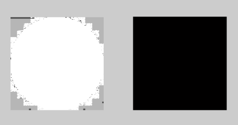
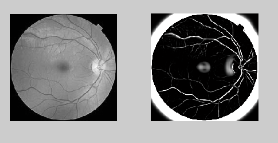
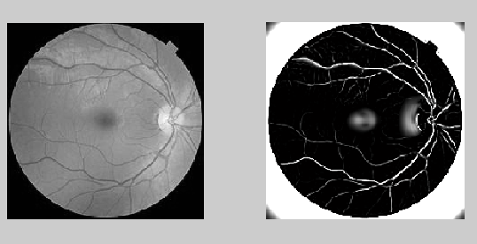

Trainable COSFIRE filters for vessel delineation with application to retinal images
Na kolejnych zajęciach kontynuowałyśmy zadanie opisane w laboratorium 3 (funkcja, która została przez nas napisana do wykrywania krawędzi nie do końca działała tak, jakbyśmy chciały,
dlatego skorzystałyśmy z pomocy w postaci innej funkcji), dlatego umieściłyśmy tam wszystko, co dotyczyło konkretnie tamtego zagadnienia.
Następnie zajęłyśmy się tematem "Frangi filtering".
Naczynia krwionośne zajmują niewielki obszar analizowanego obrazu i są jaśniejsze od tło lub ciemniejsze. To pozwoliło stworzyć funkcję, która by wykorzystywała różnicę w
intensywności obrazu pomiędzy naczyniami krwionośnymi a otaczającą je tkanką . Wartości związane z intensywnością obrazu mogą być uznane za funcję dyskretną.
W metodzie z Frangi filter, oblicza się Hesjan dla każdego piksela (Hesjan-macierz pochodnych cząstkowych drugiego rzędu). Dlatego może być, podobnie jak obraz, uznany za funkcję
dyskretną[1]. Właściwości tej macierzy, takie jak wartości własne i wektory własne określają kierunek naczynia krwionośnego. Na podstawie pomiarów klasyfikuje się dane
piksele jako naczynia krwionośne jako otaczające je tkanki.[2] Proces ten związany jest z metodą filtracji Frangi. Dzięki stosowaniu filtrów Frangi można określić, jak wydłużowy jest
obszar obrazu, czyli wykrywane są naczynia, które są długie.
Kod pobrałyśmy ze strony.
Próbwałyśmy uruchomić podany program, jednak wystąpiły pewne błędy przy kompilacji. Okazało się, że nie zauważyłyśmy, że próbujemy uruchomić funkcję, znajdującą się wewnątrz innej
funkcji :-) .
Funkcja wykorzystuje wektory Hessian do obliczania podobieństwa obszaru na obrazie do naczyń lub innych elementów. Wartości wejściowe funkcji :
obraz wejściowy
FrangeScaleRange, który określa zakres parametru sigma-domyślnie [1 8]
FrangeScaleRatio, który określa wartość między kolejnymi parametrami sigma-domyślnie 2
FrangiBetaOne-stała korekcji Frangi-domyślnie 0,5
FrangiBetaTwo-stała korekcji Frangi-domyślnie 15
BlackWhite-Wykrywanie czarnych grzebietów- domyślnie ustawione na true, natomiast białych na false
verbose, które informuje o debugowaniu-domyślnie true
Wartością wyjściową jest obraz ze wzmocnionymi naczyniami, skala, która określa maksymalną intensywność każdego znalezionego piksela oraz matryca określa kierunki pikseli.
Pierwszym krokiem funkcji jest określenie wyżej wymienionych parametrów oraz sprawdzenie czy wszystkie zostały podane. Następnie tworzone są nowe macierze, które będą służyć do
zapisywania nowo powstałych obrazów. Kolejno dla wszystkich parametrów sigma przeprowadzona jest filtracja Frangi: tworzona jest macierz 2D Hassian, przeprowadzana jest korekcja
dla powstałeś skali, obliczane są wektory i wartości własne, następnie obliczane są prawdopodobieństwa i obraz wyjściowy.
Po naprawieniu błędu i dokonaniu drobnych zmian w nowym skrypcie, udało nam się w końcu wyświetlić obrazy po filtracji. Otrzymałyśmy następujące obrazy:

Takich rezultatów się nie spodziewałyśmy. Jednak po zmianie parametrów otrzymałyśmy o wiele lepsze wyniki.

Przy zmianie parametru 'FrangiScaleRange' (określający zakres sigm, ilość użytych sigm) na wartość [1 20] wynik działania funkcji był następujący:

Na obrazach uwidocznione są jasne struktury na ciemnym tle. Można zauważyć, że obszar przedstawiający tkankę został wytłumiony, a naczynia w siatkówce zostały rozjaśnione.
Filtr Frangi używa się do lepszego rozróżniania krawędzi, do wzmocnienia widoczności naczyń.
Rekonstrukcja i analiza obrazów 2017
Następnie zajęłyśmy się tematem "Frangi filtering".
Naczynia krwionośne zajmują niewielki obszar analizowanego obrazu i są jaśniejsze od tło lub ciemniejsze. To pozwoliło stworzyć funkcję, która by wykorzystywała różnicę w intensywności obrazu pomiędzy naczyniami krwionośnymi a otaczającą je tkanką . Wartości związane z intensywnością obrazu mogą być uznane za funcję dyskretną.
W metodzie z Frangi filter, oblicza się Hesjan dla każdego piksela (Hesjan-macierz pochodnych cząstkowych drugiego rzędu). Dlatego może być, podobnie jak obraz, uznany za funkcję dyskretną[1]. Właściwości tej macierzy, takie jak wartości własne i wektory własne określają kierunek naczynia krwionośnego. Na podstawie pomiarów klasyfikuje się dane piksele jako naczynia krwionośne jako otaczające je tkanki.[2] Proces ten związany jest z metodą filtracji Frangi. Dzięki stosowaniu filtrów Frangi można określić, jak wydłużowy jest obszar obrazu, czyli wykrywane są naczynia, które są długie.
Kod pobrałyśmy ze strony. Próbwałyśmy uruchomić podany program, jednak wystąpiły pewne błędy przy kompilacji. Okazało się, że nie zauważyłyśmy, że próbujemy uruchomić funkcję, znajdującą się wewnątrz innej funkcji :-) .
Funkcja wykorzystuje wektory Hessian do obliczania podobieństwa obszaru na obrazie do naczyń lub innych elementów. Wartości wejściowe funkcji :
obraz wejściowy
FrangeScaleRange, który określa zakres parametru sigma-domyślnie [1 8]
FrangeScaleRatio, który określa wartość między kolejnymi parametrami sigma-domyślnie 2
FrangiBetaOne-stała korekcji Frangi-domyślnie 0,5
FrangiBetaTwo-stała korekcji Frangi-domyślnie 15
BlackWhite-Wykrywanie czarnych grzebietów- domyślnie ustawione na true, natomiast białych na false
verbose, które informuje o debugowaniu-domyślnie true
Wartością wyjściową jest obraz ze wzmocnionymi naczyniami, skala, która określa maksymalną intensywność każdego znalezionego piksela oraz matryca określa kierunki pikseli.
Pierwszym krokiem funkcji jest określenie wyżej wymienionych parametrów oraz sprawdzenie czy wszystkie zostały podane. Następnie tworzone są nowe macierze, które będą służyć do zapisywania nowo powstałych obrazów. Kolejno dla wszystkich parametrów sigma przeprowadzona jest filtracja Frangi: tworzona jest macierz 2D Hassian, przeprowadzana jest korekcja dla powstałeś skali, obliczane są wektory i wartości własne, następnie obliczane są prawdopodobieństwa i obraz wyjściowy.
Po naprawieniu błędu i dokonaniu drobnych zmian w nowym skrypcie, udało nam się w końcu wyświetlić obrazy po filtracji. Otrzymałyśmy następujące obrazy:
Przy zmianie parametru 'FrangiScaleRange' (określający zakres sigm, ilość użytych sigm) na wartość [1 20] wynik działania funkcji był następujący:
Na obrazach uwidocznione są jasne struktury na ciemnym tle. Można zauważyć, że obszar przedstawiający tkankę został wytłumiony, a naczynia w siatkówce zostały rozjaśnione. Filtr Frangi używa się do lepszego rozróżniania krawędzi, do wzmocnienia widoczności naczyń.